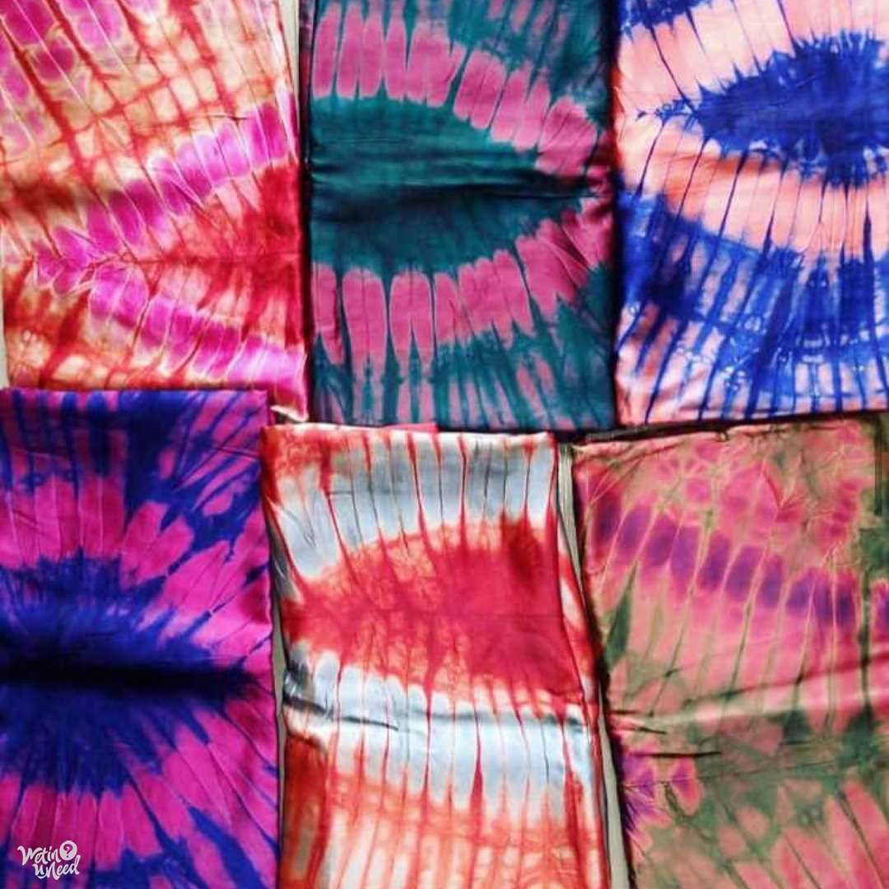

Tie and Dye cloth making is one of the predominant occupation of the Abeokuta people where the Olumo rock
is located. The tie and dye print is now trending worldwide and has been copied by big clothing brands and can readily be seen on t-shirts, face-caps, duvet covers, curtains etc.